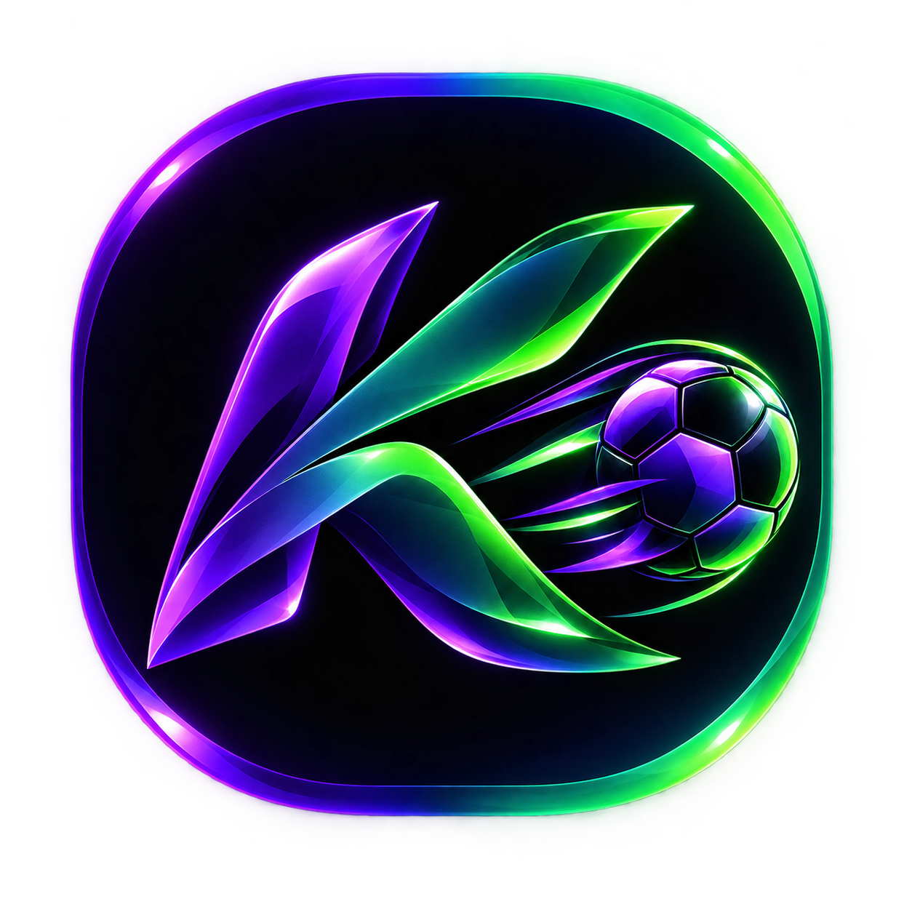

اخبار فوتبال
آخرین اخبار فوتبال جهان، همینجا در کیکورا
خبرهای مهم، نتایج و اتفاقات داغ فوتبال را سریع و مرتب دنبال کن.

KICKORAخبرهای مهم، نتایج و اتفاقات داغ فوتبال را سریع و مرتب دنبال کن.
رویدادهای مهم بازیها را سریعتر از همیشه دنبال کن.
کیکورا حالا به شکل یک PWA قابل نصب است.
پروفایل تیمها، آمار بازیکنان، تاریخچه و دادههای عمیقتر.